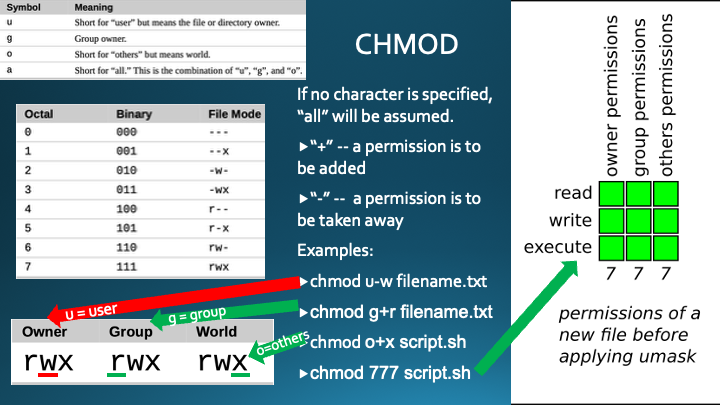

Prepare: Ch. 9 - Permissions
Overview
Task: Use the textbook and AI tools to learn about permissions in Linux.
Purpose: Learn about permissions.
Instructions
- Skim Read Chapter 9 of the textbook.
- Open the AI model/application of your choice to complete the following tasks for each part of the assignment:
- Copy/paste the provided prompt into the AI chat.
- Read the response to the prompt.
- Complete any other steps in each of the parts of the assignment.
Assignment
Part 1: Linux permissions
Ask your favorite AI: "Explain to me how Linux permissions work and help me use 'ls -l' and explain the output."
Next Steps
- Open your Ubuntu Linux (either AWS or local VM).
- Complete the commands from the AI response in your own terminal. Ask AI if you need help.
- Type your name in the scenario or terminal for identity confirmation.
- Take a screenshot of your work including date/time.
Part 2: Linux File Permissions using rwx
Ask your favorite AI: "What does the rwx stand for and how is it used on Linux? Help me use it and look at rwx in the Linux terminal."
Next Steps
- Open your Ubuntu Linux (either AWS or local VM).
- Complete the commands from the AI response in your own terminal. Ask AI if you need help.
- Type your name in the scenario or terminal for identity confirmation.
- Take a screenshot of your work including date/time.
Part 3: Linux File Permissions using 'ls' and other commands
Ask your favorite AI: "Give me an easy scenario for in Intro to Linux university course that uses the 'ls' command to look at Linux permissions and then use another command to change a couple of permissions on a file."
Next Steps
- Open your Ubuntu Linux (either AWS or local VM).
- Complete the commands from the AI response in your own terminal. Ask AI if you need help.
- Type your name in the scenario or terminal for identity confirmation.
- Take a screenshot of your work including date/time.
Part 4: Linux File Permissions Review
Study the image below to understand linux permissions.
Next Steps
- Type your name and your understanding of Linux permissions. Write one paragraph explaining the image: 
- Take a screenshot of your work including date/time.
Submission
Submit your screenshots in one document by the due date.